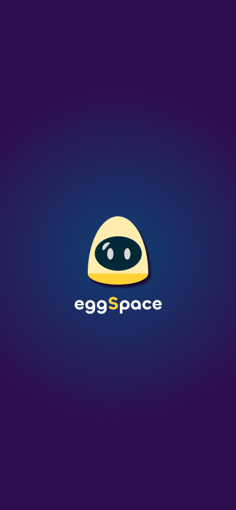

03 / UNIVERSO EN EXPANSIÓN
Ideas en modo laboratorio.
LAB es el espacio donde documento lo que aprendo, pruebo lo que imagino y comparto proyectos que nacen de la curiosidad. Un recorrido creativo que crece semestre a semestre.
● APRENDER · EXPERIMENTAR · COMPARTIREM / LAB — BITÁCORA ABIERTA
PROYECTOS UNIVERSITARIOS
Un semestre a la vez.
Una bitácora de ideas y aprendizajes. Cada proyecto reúne el reto, el proceso y aquello que me dejó la experiencia.

01 / PROYECTO UNIVERSITARIOMOON FARM SIMULATOR · 2026SEMESTRE 01DISEÑO · INTERACCIÓN · APRENDIZAJE
EggSpace
Una granja en la Luna para aprender a construir un futuro sostenible.
EggSpace es una propuesta de simulador educativo que acerca a niños y adolescentes a conceptos de emprendimiento y educación financiera a través de una experiencia lúdica. El jugador administra una granja lunar, toma decisiones y aprende a gestionar recursos.
GamificaciónEducación financieraArquitectura de informaciónDiseño de interfaces
Equipo del proyecto: Manuel Alberto Villanueva Rico y María Fernanda Botero.
Explorar proyecto en Figma ↗SEMESTRE 02En proceso.
Nuevas exploraciones, ejercicios y proyectos que irán tomando forma durante el semestre.
SEMESTRES FUTUROSEspacio para lo que viene.
La bitácora seguirá creciendo con cada reto, descubrimiento y experimento.
EL ESPÍRITU DEL LAB
El proceso también merece ser contado.
No se trata solo de mostrar entregas terminadas: aquí también tienen lugar las preguntas, los intentos y los aprendizajes que hacen posible cada resultado.
01 / APRENDERConocimiento que se comparte.
Apuntes, guías y recursos para descubrir herramientas y ampliar habilidades creativas.
Ideas en construcción.
Pruebas, prototipos y procesos nacidos de hacer preguntas y ensayar respuestas.
Detrás de cada creación.
Experiencias y herramientas útiles para estudiantes, creadores y curiosos.
UNA BITÁCORA EN MOVIMIENTO
La próxima idea puede empezar aquí.
Este laboratorio seguirá creciendo con nuevos proyectos, aprendizajes y experimentos.
Conversemos ↗LAB
← Volver al universo EfectoManu